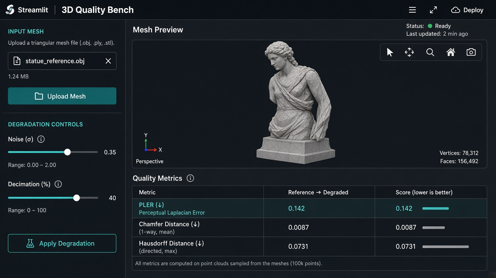

Selected work
Interactive case studies
Filter by domain. Each project page has a live SVG scheme — not a static PNG.

01 · Research
PLER 2.0
Geometric fidelity with interactive ray diagram

02 · Product
PS Core RAG
Local Qwen pipeline you can step through

03 · DSP
FxLMS ANC Lab
Live cancellation loop + measured delay

04 · Agents
AI Team
Clickable LangGraph role graph

05 · Bench
3D Quality Bench
Degrade → metrics → MOS

06 · Audio
Localization
ILD/ITD stimulus lab